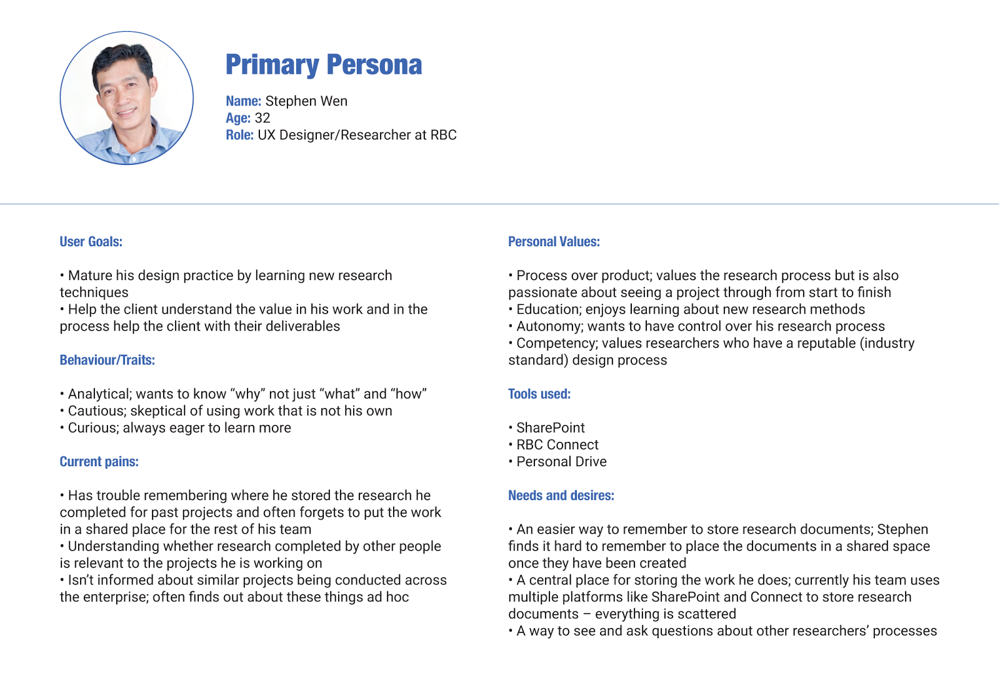
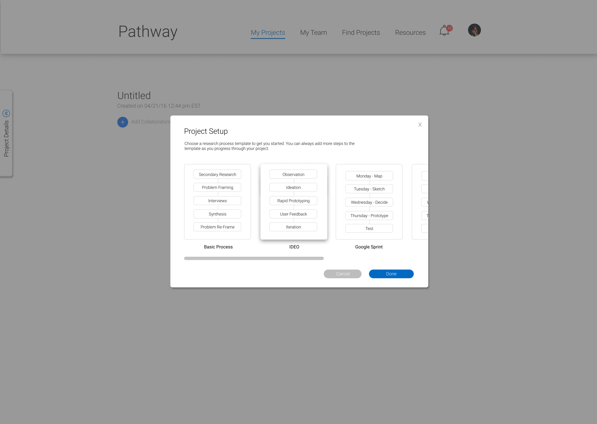
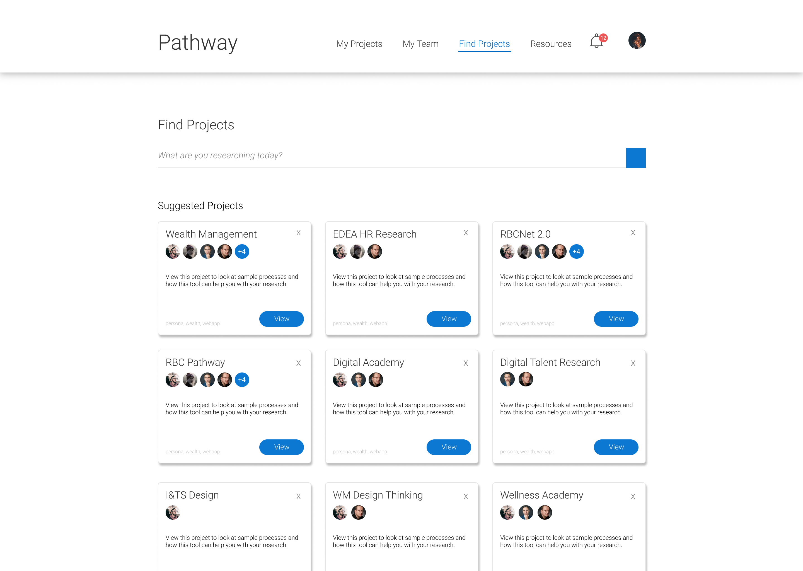

RBC Pathway
Designing a tool to empower UX Designers and Researchers to share and record their processes.
background
During my internship at the Royal Bank of Canada, I was given the opportunity to lead a project from start to finish with other fellow co-op students, Daniel Kim and Emily MacGowan.
The problem that we were given by our managers is that at RBC, many employees do not share their research findings and we wanted to figure out why that is happening and how we can solve that problem.
Role
User Researcher, UX Designer, UI Designer
Timeline
June 2017 - August 2017
Contents
pre-discovery
During this phase, we wanted to understand the problem space before moving into the solution space. For our pre-discovery research, we wanted to understand:
- The possible users and stakeholders and understand their needs
- Documented the potential impact of success with our project
- The business goals associated with this problem space
Once we felt that we did enough pre-discovery research we moved into problem framing phase to give us a starting point for our research.
problem framing
To unpack the problem space, we hosted a problem framing workshop with our team (Employee Digital Experience Architecture). At the workshop we gave the participants the following seed question: “What might be the biggest challenge when sharing research/insights and accessing existing research/insights?”
The participants were asked to write down some of the challenges they face in their day-to-day lives at work on sticky notes so that we can cluster the themes.
Initial HMW Statement
This was the first draft of our HMW statement resulting from the workshop:
"How might we foster a community of RBC researchers to share relevant information with one another so that they can make more well-informed decisions?"
The resulting themes from the framing session includes: context, redundancy in work, awareness, efficiency, challenging your research, finding research, organization, sharing/cultural, technical, quality/reliability.
research phase
During the research phase we conducted interviews and gathered secondary research to understand a researchers’ experiences in finding, storing, sharing and using both internal and external research.
Primary & Secondary Research
Our primary and secondary research was summarized and clustered into themes using a research method technique known as affinity diagramming.
Here are some sample insights we crafted from the data we synthesized:
Insight #1
RBC researchers rarely share the context and process for their research, instead they primarily share their polished research in the form of artifacts.
Insight #2
Sharing is not a proactive part of the design process. Researchers primarily share when there is a request from another individual or team.
Insight #3
Because people prioritize confidentiality and convenience in different ways, RBC employees choose different platforms for storing research resulting in decentralization.
Problem Reframe
After synthesizing our research and crafting insight statements we re-framed our initial problem statement based on our primary and secondary research. This is our revised problem statement:
"How might we enable RBC researchers to more easily and proactively document their research, and feel comfortable in doing so, so that other researchers can leverage the output and/or further their design process?"
At RBC, we discovered that sharing is not a proactive part of the research and employees typically only share when there is a request. Researchers are also more likely to use existing research if they know how relevant it is in today's context, if the source is reputable and if the context is close to their own. Researchers at RBC also rarely share the entire context or process of their own research. Instead, they primarily share their research in polished forms of artifacts such as PowerPoint presentations, personas, and insight statements.
Persona
A primary evidence-based persona was developed using the research we conducted as a team. In this persona we outlined user goals, behaviours, current pains, values, tools used and their needs and desires with respect to finding, sharing, using and documenting research.
As RBC did not have a dedicated space for designers and researchers, we ended up stealing a touchdown room and stayed in there for a week until we were kicked out.
Persona we've developed.
Site Map & User Flows
As the main function of our tool is for users to record their processes, the project tree was the landing page. The user can easily navigate to the project tree from searching or finding projects, and as well as viewing projects from their team page.
Create Project Tree User Flow
We wanted the flow of creating a project tree to be intuitive by making it a simple and easy process for the user.
Project Tree
Our solution to this problem was creating a "project tree" to help users easily document the research process and sharing that process with other researchers and stakeholders across the bank. As designers and researchers, we do a lot of our work on a whiteboard or stickies, and as well as create many digital artifacts. For a better file organization, users are able to add images or documents to their project tree.
Helping further the design field at RBC
Our team wanted to further the design field at RBC; very few teams at RBC were educated about research and design thinking so we wanted to help employees learn more about these processes so that they can create better products and make better decisions. For example, one individual we interviewed was a UI/UX Designer and they did not know how to conduct user research and did not incorporate these methods into their design process.
We also had different preset templates for the users if they had no knowledge on research to guide them in the right direction. Users were also able to create their own templates or duplicate trees so that they can document their research much faster.
User Testing & Development
After completing the mockups, we prototyped Pathway on InVision and did some user testing. As we were in our final week of our internship, we were concurrently developing Pathway and running user-testing sessions as time was short. Dan led the development while Emily and I assisted as we wanted to get our hands dirty with front-end development. We used ReactJS to create our live prototype. On the other end, Emily led user-testing and we did what we could in the time we had left. We generally received positive feedback and incorporated the feedback into our prototype. In the end, we developed a somewhat functional Pathway and handed off our project to our team for the next set of co-ops
Lessons learned
During this project, I learned about the value of research and how it can inform my design. In the beginning, I was focused on the solution and did not think much of the problem space. Overtime, we uncovered more information that ultimately lead us to our final design where we received positive feedback from many designers and researchers at RBC. Many of our colleagues said that our tool was useful and that they would definitely use it at work.
Our project was also time-sensitive as we only had two months to create a functioning proof of concept. We spent the bulk of our time with research because we wanted to get the solution right but because of this, we didn't have much time to do user-testing and incorporate feedback to reiterate our designs. Project planning and time-management is definitely another thing I would focus on next time.
RBC Pathway site map.

Create project tree user flow.

RBC Pathway project tree.
Project tree templates.
Users can find suggested projects or search on the "Find Projects" page.